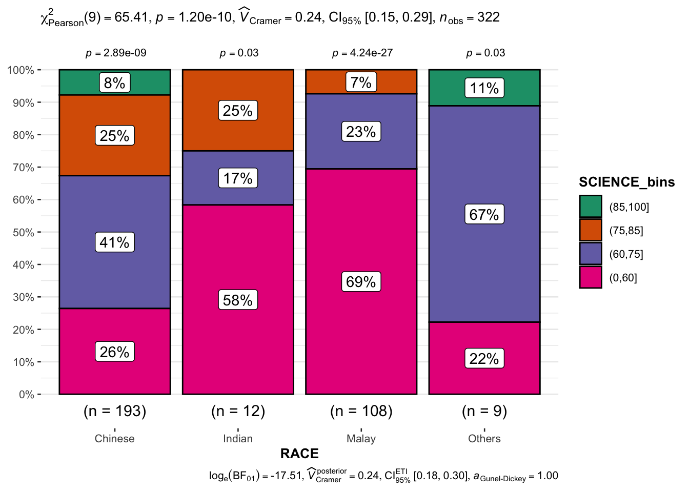

pacman::p_load(ggstatsplot, tidyverse)Hands-on_Ex04(2) - Visual Statistical Analysis
1 Learning Outcome
In this hands-on exercise, we will gain hands-on experience on using:
- ggstatsplot package to create visual graphics with rich statistical information.
- performance package to visualise model diagnostics.
- parameters package to visualise model parameters.
2 Visual Statistical Analysis with ggstatsplot
ggstatsplot is an extension of ggplot2 package for creating graphics with details from statistical tests included in the information-rich plots themselves.
- to provide alternative statistical inference methods by default.
- to follow best practices for statistical reporting. For all statistical tests reported in the plots, the default template abides by the [APA](https://my.ilstu.edu/~jhkahn/apastats.html) gold standard for statistical reporting.
For example, here are results from a robust t-test:3 Getting started
3.1 Installing and launching R packages
In this exercise, ggstatsplot and tidyverse will be used.
3.2 Importing data
DIY
Import Exam-csv data by using appropriate tidyverse package.
exam <- read_csv("Exam_data.csv")3.3 One-sample test: gghistostats() method
In the code chunk below, gghistostats() is used to build an visual of one-sample test on English scores.
Show the code
set.seed(1234)
gghistostats(
data = exam,
x = ENGLISH,
type = "bayes",
test.value = 60,
xlab = "English scores"
)
Default information:
statistical details / Bayes Factor / sample sizes / distribution summary
3.4 Unpacking the Bayes Factor
A Bayes factor is the ratio of the likelihood of one particular hypothesis to the likelihood of another. It can be interpreted as a measure of the strength of evidence in favour of one theory among two competing theories.
That’s because the Bayes factor gives us a way to evaluate the data in favour of a null hypothesis, and to use external information to do so. It tells us what the weight of the evidence is in favour of a given hypothesis.
When we are comparing two hypotheses, H1 (the alternate hypothesis) and H0 (the null hypothesis), the Bayes factor is often written as B10. It can be defined mathematically as:
\[ \frac{likelihood-of-data-given-H_1}{likelihood-of-data-given-H_0} = \frac{P(D|H_1)}{P(D/H_0)} \]
The Schwarz criterion is one of the easiest ways to calculate rough estimation of the Bayes factor.
3.5 How to interpret Bayes Factor
A Bayes Factor can be any positive number.
One of the most common interpretation is this one - first proposed by Harold Jeffereys (1961) and slightly modified by Lee and Wagemakers in 2013.
| IF B10 IS… | THEN YOU HAVE |
|---|---|
| >100 | Extreme evidence for H1 |
| 30 - 100 | Very strong evidence for H1 |
| 10 - 30 | Strong evidence for H1 |
| 3 - 10 | Moderate evidence for H1 |
| 1 - 3 | Anecdotal evidence for H1 |
| 1 | No evidence |
| 1/3 - 1 | Anecdotal evidence for H1 |
| 1/3 - 1/10 | Moderate evidence for H1 |
| 1/10 - 1/30 | Strong evidence for H1 |
| 1/30 - 1/100 | Very Strong evidence for H1 |
| <1/100 | Extreme evidence for H1 |
3.6 Two-sample mean test: ggbetweenstats()
In the code chunk below, ggbetweenstats() is used to build a visual for two-sample mean test of Maths scores by gender.
Show the code
ggbetweenstats(
data = exam,
x = GENDER,
y = MATHS,
type = "np",
message = FALSE
)Default information: statistical details / Bayes factor / samples sizes / distribution summary
3.7 Oneway ANOVA Test: ggbetweentats() method
In the code chunk below, ggbetweenstats() is used to build a visual for One-way ANOVA test on English scores by race.
Show the code
ggbetweenstats(
data = exam,
x = RACE,
y = ENGLISH,
type = "p",
mean.ci = TRUE,
pariwise.comparisons = TRUE,
pairwise.display = "s",
p.adjust.methods = "fdr",
message = FALSE
)- “na” -> only non-significant
- “s” -> only significant
- “all” -> everything
3.7.1 ggbetweentats() - Summary of tests
Following (between-subjects) tests are carried out for each type of analyses.
| TYPE | NO. OF GROUPS | TEST |
|---|---|---|
| Parametric | >2 | Fisher’s or Welch’s one-way ANOVA |
| Non-Parametric | >2 | Kruskal-Wallis one-way ANOVA |
| Robust | >2 | Heteroscedastic one-way ANOVA for trimmed means |
| Bayes Factor | >2 | Fisher’s ANOVA |
| Parametric | 2 | Student’s or Welch’s t-test |
| Non-Parametric | 2 | Mann-Whitney U test |
| Robust | 2 | Yuen’s test for trimmed means |
| Bayes Factor | 2 | Student’s t-test |
The following effect sizes (and confidence intervals) are available for each type of test

Summary of multiple pairwise comparison tests supported in ggbetweenstats()

3.8 Significant test of correlation: ggscatterstats()
In the code chunk below, ggscatterstats() is used to build a visual for Significant Test of Correlation between Maths scores and English scores. Practice using various subjects from the data and labeling functions.
Maths x Science; use labels to indicate races scoring 90 for both subjects.
Show the code
ggscatterstats(
data = exam,
x = MATHS,
y = SCIENCE,
label.var = RACE,
label.expression = MATHS >= 90 & SCIENCE >= 90,
marginal = FALSE
)English x Science; use labels to indicate genders scoring 90 for both subjects.
Show the code
ggscatterstats(
data = exam,
x = ENGLISH,
y = SCIENCE,
label.var = GENDER,
label.expression = ENGLISH >= 90 & SCIENCE >= 90,
marginal = FALSE
)Show the code
ggscatterstats(
data = exam,
x = MATHS,
y = ENGLISH,
marginal = FALSE
)
3.9 Significant test of association (dependence): ggbarstats()
Code chunk below, the Maths scores are binned into a 4-class variable with cut()
#load library
library(dplyr)
exam1 <- exam |>
mutate(MATHS_bins =
cut(MATHS,
breaks = c(0,60,75,85,100)))ggbarstats() is used to build a visual for Significant Test of Association in the code below.
Usage
ggbarstats(
data,
x,
y,
counts = NULL,
type = "parametric",
paired = FALSE,
results.subtitle = TRUE,
label = "percentage",
label.args = list(alpha = 1, fill = "white"),
sample.size.label.args = list(size = 4),
digits = 2L,
proportion.test = results.subtitle,
digits.perc = 0L,
bf.message = TRUE,
ratio = NULL,
conf.level = 0.95,
sampling.plan = "indepMulti",
fixed.margin = "rows",
prior.concentration = 1,
title = NULL,
subtitle = NULL,
caption = NULL,
legend.title = NULL,
xlab = NULL,
ylab = NULL,
ggtheme = ggstatsplot::theme_ggstatsplot(),
package = "RColorBrewer",
palette = "Dark2",
ggplot.component = NULL,
...
)To see English scores by genders.
Show the code
exam_E <- exam |>
mutate(ENGLISH_bins =
cut(ENGLISH,
breaks = c(0,60,75,85,100)))
ggbarstats(exam_E,
x = ENGLISH_bins,
y = GENDER)To see Science scores by races.
Show the code
exam_S <- exam |>
mutate(SCIENCE_bins =
cut(SCIENCE,
breaks = c(0,60,75,85,100)))
ggbarstats(exam_S,
x = SCIENCE_bins,
y = RACE)
ggbarstats(exam1,
x = MATHS_bins,
y = GENDER)